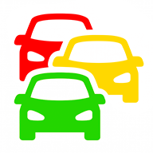

Choisir une destination met fin au mode libre.
La navigation s'arrête ici. Les points et la vie du compagnon sont conservés.
Personne n'est encore sorti de sa cage.
Trois missions tenues avec un animal, et il est libre — il apparaîtra ici.